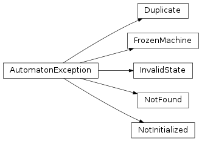

API¶
Machines¶
-
class
automaton.machines.State(name, is_terminal=False, next_states=None, on_enter=None, on_exit=None)[source]¶ Container that defines needed components of a single state.
Usage of this and the
build()make creating finite state machines that much easier.Variables: - name – The name of the state.
- is_terminal – Whether this state is terminal (or not).
- next_states – Dictionary of ‘event’ -> ‘next state name’ (or none).
- on_enter – callback that will be called when the state is entered.
- on_exit – callback that will be called when the state is exited.
-
class
automaton.machines.FiniteMachine(default_start_state=None)[source]¶ A finite state machine.
This state machine can be used to automatically run a given set of transitions and states in response to events (either from callbacks or from generator/iterator send() values, see PEP 342). On each triggered event, a
on_enterandon_exitcallback can also be provided which will be called to perform some type of action on leaving a prior state and before entering a new state.NOTE(harlowja): reactions will only be called when the generator/iterator from
run_iter()does not send back a new event (they will always be called if therun()method is used). This allows for two unique ways (these ways can also be intermixed) to use this state machine when usingrun(); one where external event trigger the next state transition and one where internal reaction callbacks trigger the next state transition. The other way to use this state machine is to skip usingrun()orrun_iter()completely and use theprocess_event()method explicitly and trigger the events via some external functionality/triggers...-
class
Effect(reaction, terminal)¶ The result of processing an event (cause and effect...)
-
reaction¶ Alias for field number 0
-
terminal¶ Alias for field number 1
-
-
FiniteMachine.__contains__(state)[source]¶ Returns if this state exists in the machines known states.
-
FiniteMachine.add_reaction(state, event, reaction, *args, **kwargs)[source]¶ Adds a reaction that may get triggered by the given event & state.
Reaction callbacks may (depending on how the state machine is ran) be used after an event is processed (and a transition occurs) to cause the machine to react to the newly arrived at stable state.
These callbacks are expected to accept three default positional parameters (although more can be passed in via args and **kwargs, these will automatically get provided to the callback when it is activated *ontop of the three default). The three default parameters are the last stable state, the new stable state and the event that caused the transition to this new stable state to be arrived at.
The expected result of a callback is expected to be a new event that the callback wants the state machine to react to. This new event may (depending on how the state machine is ran) get processed (and this process typically repeats) until the state machine reaches a terminal state.
-
FiniteMachine.add_state(state, terminal=False, on_enter=None, on_exit=None)[source]¶ Adds a given state to the state machine.
The
on_enterandon_exitcallbacks, if provided will be expected to take two positional parameters, these being the state being exited (foron_exit) or the state being entered (foron_enter) and a second parameter which is the event that is being processed that caused the state transition.
-
FiniteMachine.add_transition(start, end, event, replace=False)[source]¶ Adds an allowed transition from start -> end for the given event.
Parameters: - start – starting state
- end – ending state
- event – event that causes start state to transition to end state
- replace – replace existing event instead of raising a
Duplicateexception when the transition already exists.
-
classmethod
FiniteMachine.build(state_space)[source]¶ Builds a machine from a state space listing.
Each element of this list must be an instance of
Stateor adictwith equivalent keys that can be used to construct aStateinstance.
-
FiniteMachine.copy(shallow=False, unfreeze=False)[source]¶ Copies the current state machine.
NOTE(harlowja): the copy will be left in an uninitialized state.
- NOTE(harlowja): when a shallow copy is requested the copy will share
- the same transition table and state table as the source; this can be advantageous if you have a machine and transitions + states that is defined somewhere and want to use copies to run with (the copies have the current state that is different between machines).
-
FiniteMachine.current_state¶ The current state the machine is in (or none if not initialized).
-
FiniteMachine.default_start_state¶ Sets the default start state that the machine should use.
NOTE(harlowja): this will be used by
initializebut only if that function is not given its ownstart_statethat overrides this default.
-
FiniteMachine.events¶ Returns how many events exist.
-
FiniteMachine.initialize(start_state=None)[source]¶ Sets up the state machine (sets current state to start state...).
Parameters: start_state – explicit start state to use to initialize the state machine to. If Noneis provided then the machine’s default start state will be used instead.
-
FiniteMachine.is_actionable_event(event)[source]¶ Check whether the event is actionable in the current state.
-
FiniteMachine.pformat(sort=True, empty='.')[source]¶ Pretty formats the state + transition table into a string.
NOTE(harlowja): the sort parameter can be provided to sort the states and transitions by sort order; with it being provided as false the rows will be iterated in addition order instead.
-
FiniteMachine.process_event(event)[source]¶ Trigger a state change in response to the provided event.
Returns: Effect this is either a FiniteMachine.Effector anEffectfrom a subclass ofFiniteMachine. See the appropriate named tuple for a description of the actual items in the tuple. For example,FiniteMachine.Effect‘s first item isreaction: one could invoke this reaction’s callback to react to the new stable state.Return type: namedtuple
-
FiniteMachine.states¶ Returns the state names.
-
FiniteMachine.terminated¶ Returns whether the state machine is in a terminal state.
-
class
-
class
automaton.machines.HierarchicalFiniteMachine(default_start_state=None)[source]¶ A fsm that understands how to run in a hierarchical mode.
-
class
Effect(reaction, terminal, machine)¶ The result of processing an event (cause and effect...)
-
machine¶ Alias for field number 2
-
reaction¶ Alias for field number 0
-
terminal¶ Alias for field number 1
-
-
HierarchicalFiniteMachine.add_state(state, terminal=False, on_enter=None, on_exit=None, machine=None)[source]¶ Adds a given state to the state machine.
Parameters: machine ( FiniteMachine) – the nested state machine that will be transitioned into when this state is enteredFurther arguments are interpreted as for
FiniteMachine.add_state().
-
HierarchicalFiniteMachine.initialize(start_state=None, nested_start_state_fetcher=None)[source]¶ Sets up the state machine (sets current state to start state...).
Parameters: - start_state – explicit start state to use to initialize the
state machine to. If
Noneis provided then the machine’s default start state will be used instead. - nested_start_state_fetcher – A callback that can return start
states for any nested machines
only. If not
Nonethen it will be provided a single argument, the machine to provide a starting state for and it is expected to return a starting state (orNone) for each machine called with. Do note that this callback will also be passed to other nested state machines as well, so it will also be used to initialize any state machines they contain (recursively).
- start_state – explicit start state to use to initialize the
state machine to. If
-
HierarchicalFiniteMachine.nested_machines¶ Dictionary of all nested state machines this machine may use.
-
class
Runners¶
-
class
automaton.runners.Runner(machine)[source]¶ Machine runner used to run a state machine.
Only one runner per machine should be active at the same time (aka there should not be multiple runners using the same machine instance at the same time).
-
run_iter(event, initialize=True)[source]¶ Returns a iterator/generator that will run the state machine.
NOTE(harlowja): only one runner iterator/generator should be active for a machine, if this is not observed then it is possible for initialization and other local state to be corrupted and cause issues when running...
-
-
class
automaton.runners.FiniteRunner(machine)[source]¶ Finite machine runner used to run a finite machine.
Only one runner per machine should be active at the same time (aka there should not be multiple runners using the same machine instance at the same time).
-
class
automaton.runners.HierarchicalRunner(machine)[source]¶ Hierarchical machine runner used to run a hierarchical machine.
Only one runner per machine should be active at the same time (aka there should not be multiple runners using the same machine instance at the same time).
-
run_iter(event, initialize=True)[source]¶ Returns a iterator/generator that will run the state machine.
This will keep a stack (hierarchy) of machines active and jumps through them as needed (depending on which machine handles which event) during the running lifecycle.
NOTE(harlowja): only one runner iterator/generator should be active for a machine hierarchy, if this is not observed then it is possible for initialization and other local state to be corrupted and causes issues when running...
-
Converters¶
-
automaton.converters.pydot.convert(machine, graph_name, graph_attrs=None, node_attrs_cb=None, edge_attrs_cb=None, add_start_state=True, name_translations=None)[source]¶ Translates the state machine into a pydot graph.
Parameters: - machine (FiniteMachine) – state machine to convert
- graph_name (string) – name of the graph to be created
- graph_attrs (dict) – any initial graph attributes to set (see http://www.graphviz.org/doc/info/attrs.html for what these can be)
- node_attrs_cb (callback) – a callback that takes one argument
stateand is expected to return a dict of node attributes (see http://www.graphviz.org/doc/info/attrs.html for what these can be) - edge_attrs_cb (callback) – a callback that takes three arguments
start_state, event, end_stateand is expected to return a dict of edge attributes (see http://www.graphviz.org/doc/info/attrs.html for what these can be) - add_start_state (bool) – when enabled this creates a private start state
with the name
__start__that will be a point node that will have a dotted edge to thedefault_start_statethat your machine may have defined (if your machine has no actively defineddefault_start_statethen this does nothing, even if enabled) - name_translations (dict) – a dict that provides alternative
statestring names for each state
Exceptions¶
-
exception
automaton.exceptions.AutomatonException[source]¶ Base class for most exceptions emitted from this library.
-
exception
automaton.exceptions.FrozenMachine[source]¶ Exception raised when a frozen machine is modified.
-
exception
automaton.exceptions.InvalidState[source]¶ Raised when a invalid state transition is attempted while executing.
-
exception
automaton.exceptions.NotFound[source]¶ Raised when some entry in some object doesn’t exist.
-
exception
automaton.exceptions.NotInitialized[source]¶ Error raised when an action is attempted on a not inited machine.
Hierarchy¶
